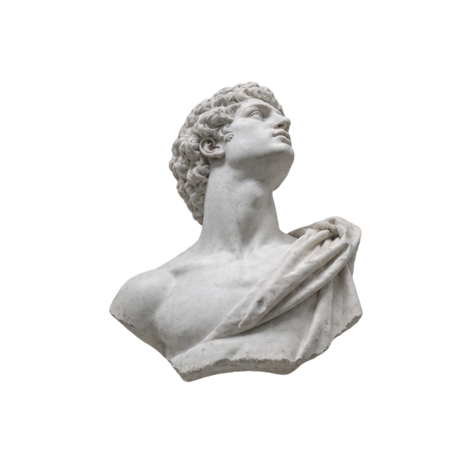

Визуальный характер
Подбираю типографику, фотографии и композицию с учётом специфики бизнеса. Анимация должна дополнять интерфейс, а не мешать ему.
Работаю напрямую с заказчиком. Продумываю визуальный характер сайта и удобство взаимодействия с ним.
Разрабатываю сайты для бизнеса и частных специалистов. Начинаю с обсуждения задачи, затем проектирую структуру, интерфейс и визуальное оформление.
Работаю с HTML, CSS и JavaScript. По требованиям проекта реализую 3D, анимации, каталоги, формы и интеграции с Telegram.
Уделяю внимание не только первому экрану, но и производительности, адаптивности и удобству навигации. После разработки передаю исходники и помогаю с запуском.
Посмотреть примеры работ
Подбираю типографику, фотографии и композицию с учётом специфики бизнеса. Анимация должна дополнять интерфейс, а не мешать ему.
Каталоги, запись, заявки в Telegram и интерактивные сценарии. Функционал подбираем по реальным задачам проекта.
Стоимость и этапы согласуем заранее. После запуска вы получаете исходники и доступы для самостоятельного управления сайтом.